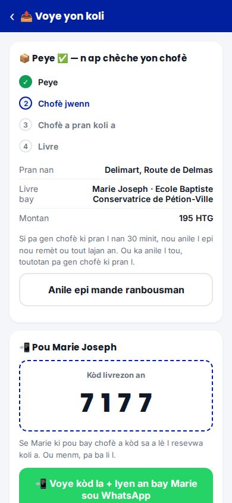
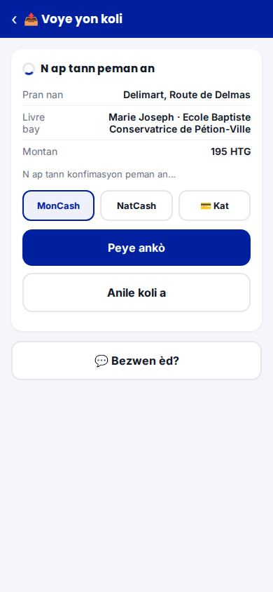
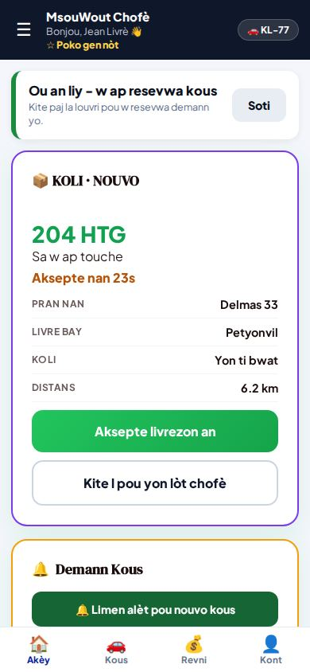
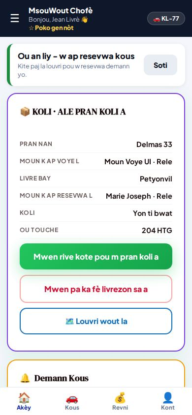
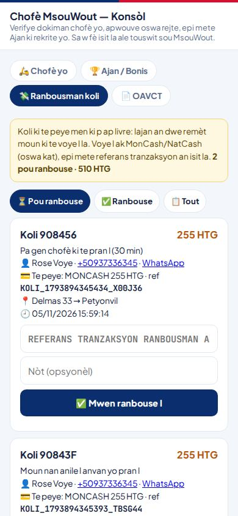
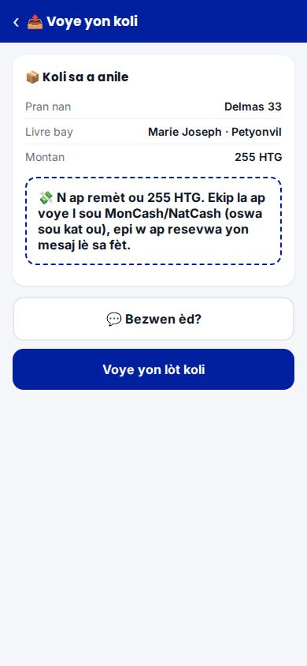
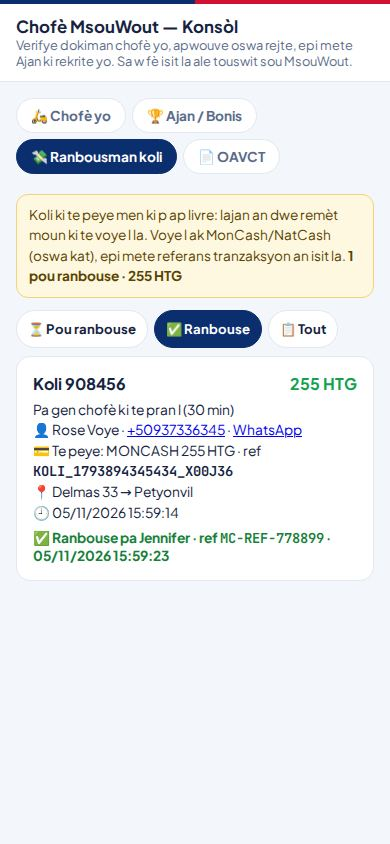
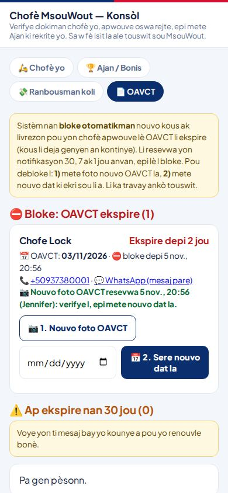
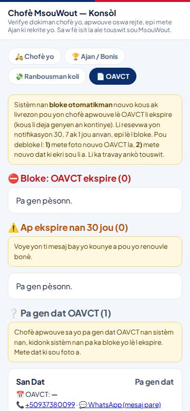

1Kijan yon kòmand koli mache
- Kliyan an louvri msouwout.com → LIVREZON → 📤 Voye yon koli.
- Li mete foto koli a, kote pou pran l, kote pou pote l, non ak telefòn moun k ap resevwa a. Pri a parèt anvan li peye.
- Li peye davans: MonCash, NatCash oswa kat. Koli a pa ale bay okenn chofè anvan peman an konfime.
- Li resevwa yon kòd 4 chif. Li voye kòd la bay moun k ap resevwa a (bouton WhatsApp), ak yon lyen pou swiv koli a.
- Yon chofè pran l, li pote l. Livrezon an fini sèlman lè chofè a tape bon kòd moun k ap resevwa a.


2Kijan chofè a jwenn koli a
- Se otomatik: sistèm nan ofri l bay chofè ki an liy ki pi pre a. Li gen 30 segonn pou aksepte. Si li pa aksepte, sistèm nan ofri l bay pwochen chofè a.
- Chofè a sèvi ak menm aplikasyon MsouWout la: kat 📦 KOLI parèt sou ekran li.
- Yon sèl travay alafwa: yon chofè ki gen yon kous oswa yon koli pa resevwa okenn lòt.
- Chofè ki OAVCT li ekspire, oswa kont tès Apple la, pa janm resevwa koli.
- Lajan chofè a parèt nan onglè Revni li, nan kat "📦 Livrezon & koli". Li bloke 24 èdtan, apre sa li ka retire l.


3Anilasyon
| Kliyan an anile anvan li peye | Anile, pa gen lajan pou remèt. |
| Li peye, men okenn chofè poko pran l | Li ka anile l li menm. Ranbousman an parèt nan 💸 pou ou. |
| Pa gen chofè nan 30 minit | Sistèm nan anile l pou kont li. Ranbousman an parèt nan 💸. |
| Yon chofè deja pran l | Kliyan an pa ka anile l ankò. Li dwe rele w (gade pati 6). |
| Li peye apre li te anile | Koli a pa ale. Ranbousman an parèt nan 💸 ("Peye APRE li te anile"). |
4Ranbousman (💸 Ranbousman koli)
Louvri konsòl chofè a- Louvri konsòl la ak kòd ou, epi peze onglè 💸 Ranbousman koli.
- "⏳ Pou ranbouse" montre chak koli ou dwe remèt lajan: non kliyan an, telefòn li (WhatsApp), montan an, ak referans peman orijinal la.
- Voye lajan an bay kliyan an (MonCash / NatCash, oswa kat).
- Apre kliyan an resevwa lajan an sèlman: mete referans tranzaksyon ranbousman an, epi peze "✅ Mwen ranbouse l".
- Kliyan an wè sou paj li: "Nou remèt ou X HTG, ref …".
⚠️ Pa janm make "ranbouse" anvan lajan an rive nan men kliyan an. San referans, sistèm nan refize l. Ou pa ka make l de fwa.



2 ranbousman kous pasaje (pa koli) toujou ap tann: MW-4RQDSL0 (318 HTG) ak MW-AC83LG6 (284 HTG). Verifye yo, epi anrejistre referans peman yo.
5OAVCT (📄 OAVCT)
- Sistèm nan bloke otomatikman nouvo kous ak koli pou yon chofè apwouve lè OAVCT li ekspire. Kous li deja genyen an kontinye nòmal.
- Chofè a resevwa yon notifikasyon 30, 7 ak 1 jou anvan, epi lè l bloke.
- Onglè 📄 OAVCT montre: ⛔ chofè ki bloke, ⚠️ sa ki ap ekspire nan 30 jou, ❔ sa ki pa gen dat.
Pou debloke yon chofè
- 📷 1. Nouvo foto OAVCT: mete foto nouvo dokiman an (oswa Ajan li voye l nan aplikasyon LajanMaker la; w ap wè "📷 Nouvo foto OAVCT resevwa").
- Gade dat ki ekri sou foto a.
- 📅 2. Sere nouvo dat la. Chofè a ka travay ankò touswit.
Yon dat san yon nouvo foto: sistèm nan refize l. Se konsa nou sèten dokiman an verifye.
Pou kounye a: mete dat OAVCT Gaby Debois (❔ Pa gen dat OAVCT). Dorvilier Rochel ap ekspire 25 nov: li deja resevwa premye rapèl la.


6Pwoblèm livrezon: kisa pou fè
| Moun k ap resevwa a pa gen kòd la | Kliyan an (moun ki voye a) re-voye l ak bouton WhatsApp ki sou paj li. San bon kòd la, chofè a pa ka fini. |
| Chofè a pa jwenn adrès la | Li gen bouton pou rele moun ki voye a ak moun k ap resevwa a, ak GPS la. |
| Chofè a pa ka fè l (anvan li pran koli a) | Li peze "Mwen pa ka fè livrezon sa a": sistèm nan ofri l bay yon lòt chofè. |
| Chofè a deja gen koli a nan men l epi gen pwoblèm | Rele chofè a ak kliyan an. Koli a dwe rive oswa retounen bay moun ki voye l la. Note sa ki pase, epi voye yon foto ekran bay Jeffery. |
| Kòd la pa bon plizyè fwa | Sistèm nan refize move kòd yo. Rele moun k ap resevwa a pou verifye kòd li a. |
| Kliyan an peye men li pa wè kòd la | Li louvri menm paj la ankò. Paj la mete l ajou pou kont li lè peman an konfime. |
Si gen yon pwoblèm grav ak Koli, Jeffery ka mande pou nou poze nouvo kòmand koli yo nan yon minit, pandan n ap rezoud li. Koli ki deja peye yo fini nòmal.
MsouWout · MyPlopPlop · HaitiBiznis · 5 nov 2026